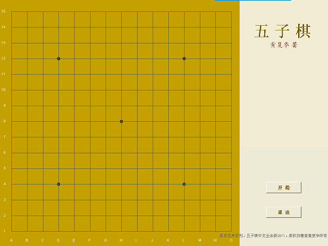

五子棋中文业余版2011
#1 五子棋中文业余版2011作者：有志青年 发表时间：2011-6-16 9:57:12

本真言无声五子棋单机版系列软件，由本申请人黄复华（实名）用C语言写成。
该程序可在 Win2000、WinXP、Win7平台运行。内存应>=1G。
现在申请发表该系列中的1个版本：
五子棋中文业余版2011 ：人机对下，单机版，棋力相当于业余玩家高手（不含禁手）。
上述版本，为免费软件，无须安装，便可运行。
著作人保留一切权利。
［ 灯塔连珠 于 2011-6-16 10:05:36 时花20金币送鲜花一朵］
［ 踵酃 于 2011-6-16 10:33:41 时花20金币送鲜花一朵］
#2 Re:五子棋中文业余版2011作者：灯塔连珠 发表时间：2011-6-16 10:06:35
无禁的很难在咱们这个论坛有发展呀！！！应该先普及禁手一下才好。#3 Re:五子棋中文业余版2011作者：无禁棋迷 发表时间：2011-6-16 11:11:14
支持黄复华，下了几盘，水平还不错，不是很爱进攻，如果有胜也是可以计算出来，支持了#4 Re:五子棋中文业余版2011作者：小丸.net 发表时间：2011-6-16 13:46:01
太弱了。。连我都下不过。。。。
#5 Re:五子棋中文业余版2011作者：裁决殿雪月 发表时间：2011-6-16 14:21:01
是不是在无禁高分区的那个“挂”啊？很厉害的一个软件，可惜是无禁的#6 Re:五子棋中文业余版2011作者：裁决殿雪月 发表时间：2011-6-16 14:26:07
刚下了几盘，太弱了……肯定不是无禁高一那个挂
如果有作者的联系方式就好了 嘿嘿
#7 Re:五子棋中文业余版2011作者：灯塔连珠 发表时间：2011-6-16 14:50:00
“挂”是4哥的连珠终结者2011，修正第三版。自动下棋模式，谢谢。#8 Re:五子棋中文业余版2011作者：裁决殿雪月 发表时间：2011-6-16 15:23:27
晕，我知道小4的挂，
无禁高分区也有个挂，自动下棋的，另外一个牛人编写的一个很厉害的软件！
注意！不是咪兔五子棋助手
［此帖子已被 裁决殿雪月 在 2011-6-16 15:24:57 编辑过］
#9 Re:Re:五子棋中文业余版2011作者：极地剑客 发表时间：2011-6-16 18:52:14
引用：
原文由 裁决殿雪月 发表于 2011-6-16 15:23:27 :晕，我知道小4的挂，
无禁高分区也有个挂，自动下棋的，另外一个牛人编写的一个很厉害的软件！
注意！不是咪兔五子棋助手
［此帖子已被 裁决殿雪月 在 2011-6-16 15:24:57 编辑过］
也是我们论坛的某高人
#10 Re:五子棋中文业余版2011作者：自来水 发表时间：2011-6-16 18:54:16
学了C但写不来#11 Re:五子棋中文业余版2011作者：真言无声 发表时间：2011-6-17 9:39:01
现在作者已经正在申请发表
五子棋中文专业版2011 ：人机对下，单机版，棋力相当于专业3~5级（含禁手）。
#12 Re:五子棋中文业余版2011作者：雨点滴滴 发表时间：2011-6-24 21:50:16
发现错误啦，禁手和五连同时形成就会判断错误！！速度改#13 Re:五子棋中文业余版2011作者：罗冰 发表时间：2011-9-15 23:55:26
提2个建议：
1）在棋子上面加上步数显示
2）显示落子记录，例如：h8i9i7j8
#14 Re:五子棋中文业余版2011作者：心上人 发表时间：2011-9-18 15:17:22
很好的一个对弈软件。。。。#15 Re:Re:五子棋中文业余版2011作者：真言无声 发表时间：2012-1-5 14:17:13
计划4～5月份发布2012版本，在提高攻击力方面，做了努力。
黄复华。1月5号。
#16 Re:五子棋中文业余版2011作者：真言无声 发表时间：2012-1-5 14:18:37
计划4～5月份发布2012版本，在提高攻击力方面，做了努力。
黄复华。1月5号。
#17 Re:五子棋中文业余版2011作者：蹲街丶式寂寞 发表时间：2012-1-5 16:03:21
你是不是QQ无禁手高一里，“ 无禁黑石版” 那位高手